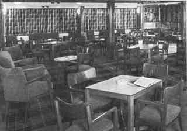

Created using
GRAMPS
Sean Haydon Griffin
's Family Tree
Backward
Forward
Individuals
Bookmarks
Repositories
GEDCOM
Contact Me
Help
orcades-2lounge small

MIME type
image/jpeg
Narrative
2. Tourist Class
Lounge
References
1.
Immigration of Martha (Rosie) Ann Bell
2.
Immigration of Henry Percival (Percy) Fowler
3.
Immigration of Charles (Perce) Percival Fowler
4.
Immigration of Blanche Constance Fowler
5.
Immigration of Derrick (Derek) Arthur William Fowler
6.
Immigration of Phyllis Annie Martha Fowler
7.
Fowler, Phyllis Annie Martha
8.
Fowler, Henry Percival (Percy)
9.
Bell, Martha (Rosie) Ann
10.
Fowler, Blanche Constance
11.
Fowler, Charles (Perce) Percival
12.
Fowler, Derrick (Derek) Arthur William